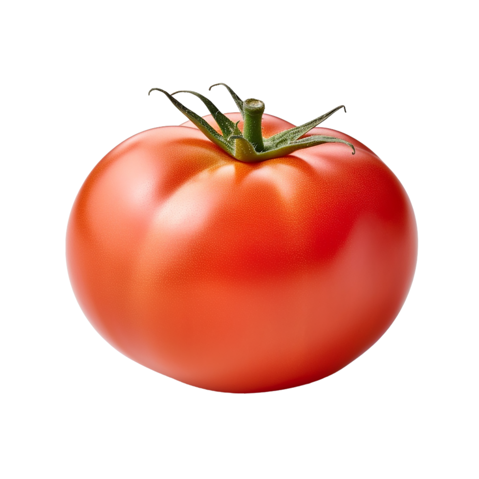

O tomate se originou na América do Sul e, embora consumido pelos astecas na Mesoamérica já em 700 d.C., foi apenas no início de 1800 que se tornou um ingrediente popular na culinária do Mediterrâneo. Existem várias teorias sobre como ele chegou à Europa.
